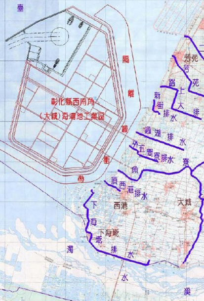

海埔地工業區預定範圍

彰化海岸濕地範圍
對比彰化縣海岸濕地以及國光石化海埔地工業區預定範圍
Photography by Ray威志 - 2017年四月
在生態旅遊及環境教育意識高漲之前，福寶、同鄰近的漢寶溼地是國內首個凝聚地力量發起的保育計畫。在高呼經濟發展的潮流中，力阻台61線西部濱海快速公路的直接跨越，反對國光石化彰化西南角海埔工業區的建設，從環境保護聯盟到如今的私人經營，當初保護的這塊溼地仍屹立不搖。但如今與當地產業的衝突，資金與人力的不足等問題漸漸浮現，福寶生態教育園區要如何謹慎面對？而不將就此默默走向結束。
福寶生態教育園區位於彰化縣福興鄉，作為一生態教育場所已行之有年。除了直接經由電話、郵件聯絡與經營者預約團體參訪，該園區也開放民眾報名參加「海洋生態體驗營」、「攝影比賽」等活動，其中也不乏與中、小學籌劃各式生態教育課程，逐步建立起福寶生態教育園區致力於教育的口碑。
福寶生態園區地理位置
1994
2001
台61線爭議的30公里
力阻員林大排至大城西濱大橋段破壞水鳥棲地
1999
年
由彰化縣環境保護聯盟經營
2006
年
由社區經營，縣政府補助向地主承租之租金
2008
2011
國光石化開發案
彰化縣政府積極爭取建設於大城鄉
2008
年
由在地人彰化縣生態觀光休閒教育協會接手
2014
2015
走了國光石化卻來了工業區？
大城產業園區回應當地民意仍期待開發
福寶生態園區與彰化海岸重大開發案時程示意圖
在過往的台灣，濕地往往被認為荒廢、雜亂無章的土地，常被轉而作為農業、工業或建築用地使用；然而近年來，國際對溼地 (wetland) 的生態功能與土地利用相當的關注，在不少文獻中，都提到濕地其實具備高度的生產力。使得國內必須重新檢視濕地的利用情形。
在國家重要濕地保育計畫下給予濕地分級及編號，卻不難發現即使同樣身為海岸自然溼地，彰化縣僅有編號TW015之大肚溪口濕地被列為台灣國家重要濕地，編號TW076的彰化海岸濕地卻無分級(包含福寶、漢寶、芳苑、大城等濕地)，並且不受到該計畫之開發利用法規保護，彷彿是為了工業開發利用而迴避。
對比彰化縣海岸濕地以及國光石化海埔地工業區預定範圍
在溼地保育的初期名為「彰化福寶生態園區」，經由當時的經營者「彰化縣環境保護聯盟」之文章傳達其主要理念為「維持一塊穩定不受干擾的環境，營造出水鳥的覓食、棲息和繁殖的環境」(蔡嘉揚 2003)。然而在文章中也提到，聯盟希望讓福寶村民瞭解透過適當的經營管理，生態的價值是可以轉換成經濟效益的。
因而就算在聯盟退出之後，如今由私人協會經營的「福寶生態教育園區」，擷自網站其主要理念為「人文、生態、教育、觀光、休閒」。開創具有地方特色的生態教育休閒產業，創造地方和社區的新生，恢復地方和社區的活力和生機，以豐富的自然資源，美感的景觀空間，吸引外地人的旅遊、參訪、消費，創造城鄉新風貌，邁向地方和社區的永續發展。生態保育的價值並不明述，但仍在經營者的管理下作為第一順位的理念。
Photography by Wayne - 2014年十二月
目前由彰化縣生態觀光休閒教育協會接手，向當地地主承租土地，大多數經費由協會自行填補。然而十年租約期只剩數年，協會理事長粘先生表示當地地主已計畫提高租金或要求協會買地，才能讓福寶濕地繼續經營下去，若須提高租金或高額經費購地，對他來說都無法負擔，因此極有可能福寶濕地再次面臨無人經營或接手維護的窘境。
由於曾爆發禽流感疫情，政府及民眾對於鳥類仍需多所防備，尤其福寶濕地的鳥類多屬候鳥，更容易造成民眾及相關單位的注意或甚至是恐慌。當地酪農戶為了避免交叉感染，紛紛設置鳥網或隔離措施，避免蒙受疫情。同時因為參訪當地牧場的行程也因為民眾的參觀，常打擾到屬於封閉型眷養式的牛隻，造成泌乳量下降，而使得酪農業者開始拒絕民眾的參觀。另亦有養殖戶抱怨水鳥吞食魚塭內的養殖魚種，造成經濟損失。
同時，在進行環境保育工作時也必須考量到其他利害關係人的想法。在訪談中，理事長提到在簽訂租約時，地主要求日後若不再承租，就必須恢復原狀，也就是要把目前所興建的賞鳥設施、解說教室等硬體設施拆除，另外也認為希望政府能夠把周邊的配套措施做好，增加訪客。如此來看，此園區正面臨相當困窘的處境。
目前園區內無接受認證的全職環境教育人員，只有過去由彰化縣環境教育促進協會、彰化縣環境保護協會所培訓的導覽人員。由與協會理事長的訪談得知，政府與外界力量提供相當少的支援，這對於經營者而言，是相當大的負擔，特別是環境保育需要長時間投入資源與人力，才能漸漸看出成效，如果日後協會受各種因素影響，不願或無法繼續進行保育活動，無疑是前功盡棄而且相當可惜。